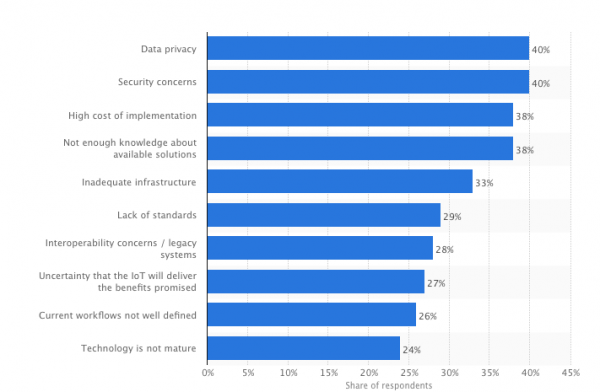
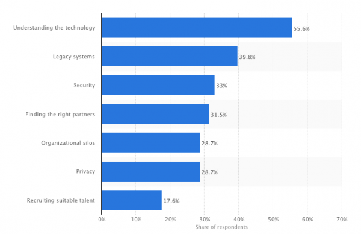

Internet of thing Statistics
Links:

40% of respondents have a lot of concerns for data privacy in regards to the adoption of IoT (Statista).

Additionally, the biggest challenge slowing IoT adoption — according to 55.6% of respondents — is understanding the technology (Statista).
For buyers, companies in the IoT stack should focus on helping them understand the technology better: its risks, interoperability concerns, and especially its potential value-add.
But while the consumer-facing benefits of IoT are simple — a more signifecant home energy system, an “assistant” that facilitates personal tasks and preferences — the B2B advandages are deeper investments with longer-term returns. So it’s important that Internet of Things marketing messages specify the IoT values and benefits for B2B companies. And value is especially important to relay to both industry executives and technical buyers tasked with signing off on IoT solutions.
87% of buyers dont heard of the term “The Internet of Things” (Accenture).
And for industry expectations, 87% of IT executives expect IoT to perform very well or better than expected (Statista).